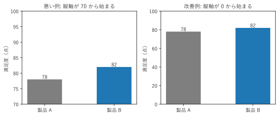
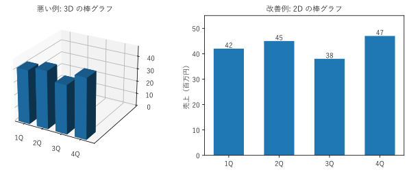
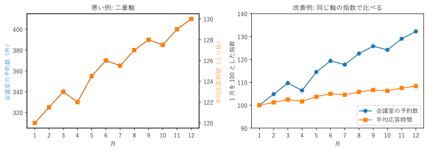
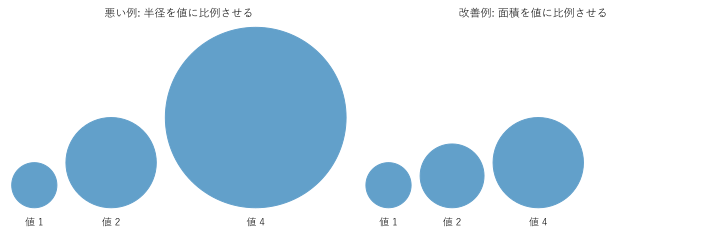
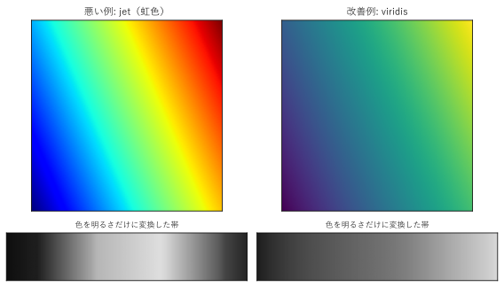
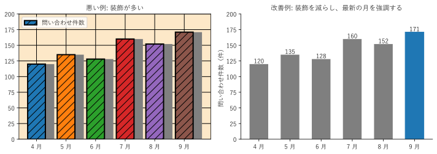

第 14 章 誤解を招くグラフと改善
グラフは、描き方によって、同じデータから異なる印象を与える。意図的でなくても、読み手に誤った結論を導かせることがある。この章では、よく見かける誤解を招くグラフを「悪い例」と「改善例」の組で示し、何が問題で、どう直せばよいかを説明する [Huff1954] [Cairo2019]。
縦軸を 0 から始めない棒グラフ
図 60 は、2 つの製品の満足度（78 点と 82 点）を棒グラフで描いたものである。

図 60 縦軸を 70 から始めた棒グラフ（左）と、0 から始めた棒グラフ（右）
左の図では、製品 B の棒が製品 A の約 1.5 倍の長さに見える。実際の差は 5% 程度である。棒グラフは棒の長さで値を表すため、縦軸を途中から始めると、長さの比が値の比と一致しなくなる。
改善：棒グラフの縦軸は 0 から始める。小さな差を見せたい場合は、棒グラフではなく、ドットプロットや折れ線グラフ（位置で値を表すグラフ）を使い、軸の範囲を明示する。あるいは、差そのもの（+4 点）を棒グラフにする。
17def create_figure() -> Figure:
18 """縦軸の始点が違う 2 つの棒グラフを並べて描く."""
19 fig, (ax_bad, ax_good) = plt.subplots(1, 2, figsize=(8, 3.4))
20 for ax, bottom, title in ((ax_bad, 70, "悪い例: 縦軸が 70 から始まる"),
21 (ax_good, 0, "改善例: 縦軸が 0 から始まる")):
22 bars = ax.bar(list(SCORES), list(SCORES.values()), width=0.5,
23 color=["C7", "C0"])
24 ax.bar_label(bars)
25 ax.set_ylim(bottom, 100)
26 ax.set_title(title, fontsize=11)
27 ax.set_ylabel("満足度（点）")
28 fig.tight_layout()
29 return fig
サンプルの全体：ch14_truncated_axis.py
3D のグラフ
棒グラフや円グラフを 3D で描くと、見た目は華やかになるが、値は読み取りにくくなる（図 61）。

図 61 同じ 4 つの値の 3D の棒グラフ（左）と 2D の棒グラフ（右）
左の 3D の棒グラフでは、手前の棒が奥の棒の一部を隠している。また、棒の上端が奥の目盛りのどこにあたるかを判断しにくく、1Q と 2Q のどちらが大きいかも分かりにくい。3D の円グラフでは、手前の扇形が厚みの分だけ大きく見える。
改善：データが 2 次元なら、2D のグラフで描く。奥行きの軸がデータの次元を表していない 3D は、装飾にすぎない。
19def create_figure() -> Figure:
20 """同じ値の 3D の棒グラフと 2D の棒グラフを描く."""
21 fig = plt.figure(figsize=(9, 3.6))
22
23 ax_bad = fig.add_subplot(1, 2, 1, projection="3d")
24 positions = np.arange(len(VALUES))
25 ax_bad.bar3d(positions, np.zeros(len(VALUES)), np.zeros(len(VALUES)),
26 0.6, 0.6, VALUES, color="C0", shade=True)
27 ax_bad.set_xlim(-0.2, 4)
28 ax_bad.set_ylim(0, 3)
29 ax_bad.view_init(elev=25, azim=-60)
30 ax_bad.set_xticks(positions + 0.3, QUARTERS)
31 ax_bad.set_yticks([])
32 ax_bad.set_title("悪い例: 3D の棒グラフ", fontsize=11)
33
34 ax_good = fig.add_subplot(1, 2, 2)
35 bars = ax_good.bar(QUARTERS, VALUES, color="C0", width=0.6)
36 ax_good.bar_label(bars)
37 ax_good.set_ylim(0, 55)
38 ax_good.set_title("改善例: 2D の棒グラフ", fontsize=11)
39 ax_good.set_ylabel("売上（百万円）")
40 fig.tight_layout()
41 return fig
サンプルの全体：ch14_3d_bar.py
二重軸のグラフ
左右に 2 つの縦軸を持つグラフ（二重軸のグラフ）は、単位の異なる 2 つの量を 1 つの図に描ける。しかし、2 つの軸の範囲は自由に選べるため、描き手の選び方次第で、2 本の線をどのようにも重ねられる（図 62）。

図 62 二重軸のグラフ（左）と、1 月を 100 とした指数のグラフ（右）
左の図では、会議室の予約数と Web API の平均応答時間が完全に連動しているように見える。これは、右軸の範囲を、2 本の線が重なるように選んだためである。2 つの量の間に関係がなくても、同じように増えていれば、軸の範囲を調整するだけで重ねられる。右の図のように、1 月を 100 とした指数にそろえると、予約数は約 32% 増えたのに対し、応答時間は約 8% しか増えていないことが分かる。
改善：単位の異なる量を比べる場合は、次のいずれかを使う。
基準時点を 100 とした指数など、同じ単位にそろえて 1 つの軸で描く。
横軸をそろえた 2 つのグラフを上下に並べる。
2 つの量の関係そのものに関心がある場合は、散布図を描く。
また、2 つの量が同時に増えていても、因果関係があるとは限らない。時間とともに増える量どうしは、関係がなくても相関係数が高くなりやすい。
24def create_figure() -> Figure:
25 """二重軸のグラフと、指数にそろえたグラフを並べて描く."""
26 fig, (ax_bad, ax_good) = plt.subplots(1, 2, figsize=(10, 3.6))
27
28 ax_bad.plot(MONTHS, BOOKINGS, color="C0", marker="o")
29 ax_bad.set_ylabel("会議室の予約数（件）", color="C0")
30 ax_right = ax_bad.twinx() # 横軸を共有する右側の縦軸
31 ax_right.plot(MONTHS, RESPONSE, color="C1", marker="s")
32 ax_right.set_ylim(119.5, 130.5) # 2 本の線が重なるように範囲を選んでいる
33 ax_right.set_ylabel("平均応答時間（ミリ秒）", color="C1")
34 ax_bad.set_title("悪い例: 二重軸", fontsize=11)
35
36 # 1 月を 100 とした指数にすると、同じ軸で増え方を比べられる
37 ax_good.plot(MONTHS, BOOKINGS / BOOKINGS[0] * 100, color="C0",
38 marker="o", label="会議室の予約数")
39 ax_good.plot(MONTHS, RESPONSE / RESPONSE[0] * 100, color="C1",
40 marker="s", label="平均応答時間")
41 ax_good.set_ylabel("1 月を 100 とした指数")
42 ax_good.set_ylim(90, 140)
43 ax_good.legend(loc="lower right")
44 ax_good.set_title("改善例: 同じ軸の指数で比べる", fontsize=11)
45
46 for ax in (ax_bad, ax_good):
47 ax.set_xlabel("月")
48 ax.set_xticks(MONTHS)
49 fig.tight_layout()
50 return fig
サンプルの全体：ch14_dual_axis.py
面積の誇張
円やアイコンの大きさで量を表すとき、半径（または高さ）を値に比例させると、面積は値の 2 乗に比例する（図 63）。

図 63 値 1、2、4 を表す円。半径を値に比例させた場合（左）と、面積を値に比例させた場合（右）
左の図では、値 4 の円の半径は値 1 の 4 倍だが、面積は 16 倍になる。読み手は面積で大きさを感じるので、差を大きく誇張してしまう。
改善：面積を値に比例させる。円の場合、半径を値の平方根に比例させればよい。
matplotlib の scatter() の s 引数は面積を指定するので、値に比例させれば正しい。ただし、面積は長さほど正確に読み取れないので、正確な比較が必要なら棒グラフを使う。
19def create_figure() -> Figure:
20 """半径を比例させた円と、面積を比例させた円を並べて描く."""
21 fig, (ax_bad, ax_good) = plt.subplots(1, 2, figsize=(10, 3.4))
22 cases = (
23 (ax_bad, [v for v in VALUES], "悪い例: 半径を値に比例させる"),
24 (ax_good, [np.sqrt(v) for v in VALUES],
25 "改善例: 面積を値に比例させる"),
26 )
27 for ax, radii, title in cases:
28 x = 0.0
29 for value, radius in zip(VALUES, radii):
30 x += radius
31 ax.add_patch(Circle((x, radius), radius, color="C0", alpha=0.7))
32 ax.text(x, -0.4, f"値 {value:.0f}", ha="center", va="top")
33 x += radius + 0.4
34 ax.set_xlim(-0.2, 15)
35 ax.set_ylim(-1.2, 8.2)
36 ax.set_aspect("equal")
37 ax.set_axis_off()
38 ax.set_title(title, fontsize=11)
39 fig.tight_layout()
40 return fig
サンプルの全体：ch14_area_scaling.py
虹色のカラーマップ
jet に代表される虹色のカラーマップは、長く多くのソフトウェアで既定のカラーマップとして使われてきた。しかし、量の大小を表す連続データには向かない [Borland2007]。

図 64 同じなだらかなデータを jet（左）と viridis（右）で描いた図。下は各カラーマップの色を明るさだけに変換した帯である
図 64 のデータは、左下から右上へなだらかに増えるだけで、境界はない。
jet で描いた左の図では、水色や黄色の付近に境界があるように見える。これは、色相の変化が一様でなく、人が色を「青」「緑」「黄」「赤」のまとまりとして知覚するためである。
下の帯は、各色を明るさ（輝度）に変換したものである。jet は明るさが中央で最大になり、両端で暗い。値の大きい赤と値の小さい青が同じ程度の暗さになるため、白黒で印刷すると大小が分からない。色覚の多様性がある読み手にとっても同様である。
viridis は、明るさが値の順に一様に増えるように設計されている。白黒でも大小が分かる。
明るさは、RGB の各成分 \((R, G, B)\) から、次の式でおおよそ計算できる（ITU-R BT.601 の重み）。
改善：連続データには、viridis、cividis などの、明るさが一様に変わるカラーマップを使う。基準値からの上下を表すデータには、発散カラーマップ（RdBu など）を使う。matplotlib 2.0 以降の既定のカラーマップは viridis である。
24def create_figure() -> Figure:
25 """2 つのカラーマップによる表示と、その明るさの帯を描く."""
26 x = np.linspace(0, 1, 200)
27 xx, yy = np.meshgrid(x, x)
28 data = xx * 0.7 + yy * 0.3 # 左下から右上へなだらかに増える値
29 gradient = np.linspace(0, 1, 256)
30
31 fig, axes = plt.subplots(2, 2, figsize=(8, 4.6),
32 height_ratios=[4, 1])
33 for col, (name, title) in enumerate((("jet", "悪い例: jet（虹色）"),
34 ("viridis", "改善例: viridis"))):
35 cmap = plt.get_cmap(name)
36 axes[0, col].imshow(data, cmap=cmap, origin="lower")
37 axes[0, col].set_title(title, fontsize=11)
38 gray = luminance(cmap(gradient))
39 axes[1, col].imshow(gray.reshape(1, -1), cmap="gray", vmin=0,
40 vmax=1, aspect="auto")
41 axes[1, col].set_title("色を明るさだけに変換した帯", fontsize=9)
42 for ax in axes[:, col]:
43 ax.set_xticks([])
44 ax.set_yticks([])
45 fig.tight_layout()
46 return fig
サンプルの全体：ch14_rainbow.py
装飾の多いグラフ
背景色、濃い格子、影、立体的な効果、必要のない凡例など、データを伝えるのに役立たない装飾を、Tufte はチャートジャンクと呼んだ [Tufte2001]。装飾は、データから読み手の注意をそらす（図 65）。

図 65 装飾の多い棒グラフ（左）と、装飾を減らして最新の月を強調した棒グラフ（右）
左の図には、次の問題がある。
棒ごとに色が違うが、色に意味がない。読み手は色の意味を探してしまう。
系列が 1 つしかないのに凡例がある。
濃い格子線、斜線の模様、背景色、影のような灰色の棒が、データの棒と競合している。
改善：右の図では、色を 1 色にし、伝えたい点（最新の 9 月が過去最多であること）だけを別の色で強調している。値を棒の先に書いたので、格子線も省いた。Tufte は、図のインクのうちデータを表すインクの割合をデータインク比と呼び、これを高めるよう提唱している。ただし、装飾を減らしすぎて、タイトルや単位などの必要な情報まで削らないよう注意する。
18def create_figure() -> Figure:
19 """装飾の多いグラフと少ないグラフを並べて描く."""
20 fig, (ax_bad, ax_good) = plt.subplots(1, 2, figsize=(10, 3.6))
21
22 # 悪い例: データと関係のない装飾が多い
23 ax_bad.set_facecolor("#fde8c8")
24 ax_bad.grid(color="black", linewidth=1)
25 ax_bad.set_axisbelow(True)
26 colors = ["C0", "C1", "C2", "C3", "C4", "C5"]
27 ax_bad.bar(MONTHS, INQUIRIES, color="gray", width=0.6,
28 align="edge") # 影の代わりにずらした灰色の棒
29 ax_bad.bar(MONTHS, INQUIRIES, color=colors, width=0.6, edgecolor="black",
30 linewidth=2, hatch="//", label="問い合わせ件数")
31 ax_bad.legend(loc="upper left")
32 ax_bad.set_title("悪い例: 装飾が多い", fontsize=11)
33
34 # 改善例: 色は 1 色、補助線は薄く、伝えたい点だけを強調する
35 bars = ax_good.bar(MONTHS, INQUIRIES, color="C7", width=0.6)
36 bars[-1].set_color("C0") # 最新の月だけ色を変える
37 ax_good.bar_label(bars)
38 for side in ("top", "right"):
39 ax_good.spines[side].set_visible(False)
40 ax_good.set_ylabel("問い合わせ件数（件）")
41 ax_good.set_title("改善例: 装飾を減らし、最新の月を強調する",
42 fontsize=11)
43
44 for ax in (ax_bad, ax_good):
45 ax.set_ylim(0, 200)
46 fig.tight_layout()
47 return fig
サンプルの全体：ch14_chartjunk.py
その他の注意点
ここまでの例のほかにも、次のような点で誤解が生じやすい。
問題 |
改善 |
|---|---|
都合の良い期間だけを切り取る |
比較する期間の選び方を説明する。長期の推移も併せて示す。 |
総数と割合の混同 |
人口の多い地域で件数が多いのは当然である。比較には、人口あたりの件数などの割合を使う。 |
横軸の間隔が不均等 |
時系列で、データのない期間を詰めて描くと、変化の速さを誤解させる。日付の軸を使い、間隔を実際の時間に合わせる。 |
誤差やばらつきを示さない |
平均だけを示すと、差が偶然の範囲かどうか分からない。分布や誤差範囲を併せて示す。 |
相関を因果と思わせる並べ方 |
2 つの量を並べただけでは、因果関係は示せない。グラフの説明で、因果を主張していないことを明確にする。 |
まとめ
棒グラフの縦軸は 0 から始める。
データの次元と関係のない 3D の表現は使わない。
二重軸のグラフは、軸の範囲の選び方でどのような関係にも見せられる。指数にそろえるか、グラフを分ける。
円やアイコンは、面積を値に比例させる。
連続データには、明るさが一様に変わるカラーマップを使う。
色や装飾は、意味のあるところにだけ使う。